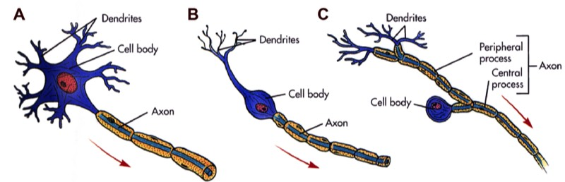
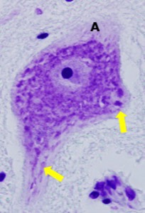
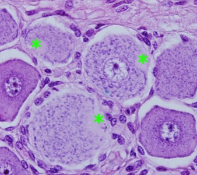

2) Morfologische indeling:
Hoewel neuronen ook kunnen ingedeeld worden naargelang de vorm van hun perikarya, worden ze wat morfologie betreft klassiek ingedeeld op basis van hun uitlopers.
Klasseer het neuron morfologisch op basis van de kenmerken van de uitlopers van het neuronaal cellichaam.
Hoewel neuronen ook kunnen ingedeeld worden naargelang de vorm van hun perikarya, worden ze wat morfologie betreft klassiek ingedeeld op basis van hun uitlopers.
Klasseer het neuron morfologisch op basis van de kenmerken van de uitlopers van het neuronaal cellichaam.

Structurele classificatie van neuronen op basis van het aantal uitlopers [axon en dendrieten (dendrites)] die vertrekken vanuit het cellichaam (cell body). Merk op dat de axonen omgeven zijn door een ‘isolatielaagje’, het myeline.
A) Multipolair neuron met 1 axon en meerdere dendrieten, B) Bipolair neuron met 1 axon en 1 dendriet, C) Pseudo-unipolair neuron met 1 axon dat onmiddellijk vertakt in een centrale en een perifere uitloper.
A) Multipolair neuron met 1 axon en meerdere dendrieten, B) Bipolair neuron met 1 axon en 1 dendriet, C) Pseudo-unipolair neuron met 1 axon dat onmiddellijk vertakt in een centrale en een perifere uitloper.

Op dit beeld van een cellichaam van een motorisch neuron zie je verschillende dendrieten (pijlen). Deze zijn te herkennen omdat dendrieten nog Nissl substantie bevatten. Ook de axonheuvel (A) is te zien, maar het axon zelf is hier niet aangesneden. Het is een multipolair neuron.

Bij deze cellichamen zie je duidelijk de axonheuvels (asterisken). Op deze plaats vertrekt het axon dat kort daarna in een centrale en perifere uitloper vertakt. Merk op dat er nergens dendrieten vertrekken vanuit het cellichaam. Dit zijn pseudo-unipolaire neuronen.
Vordering zelfstudie zenuwweefsel: